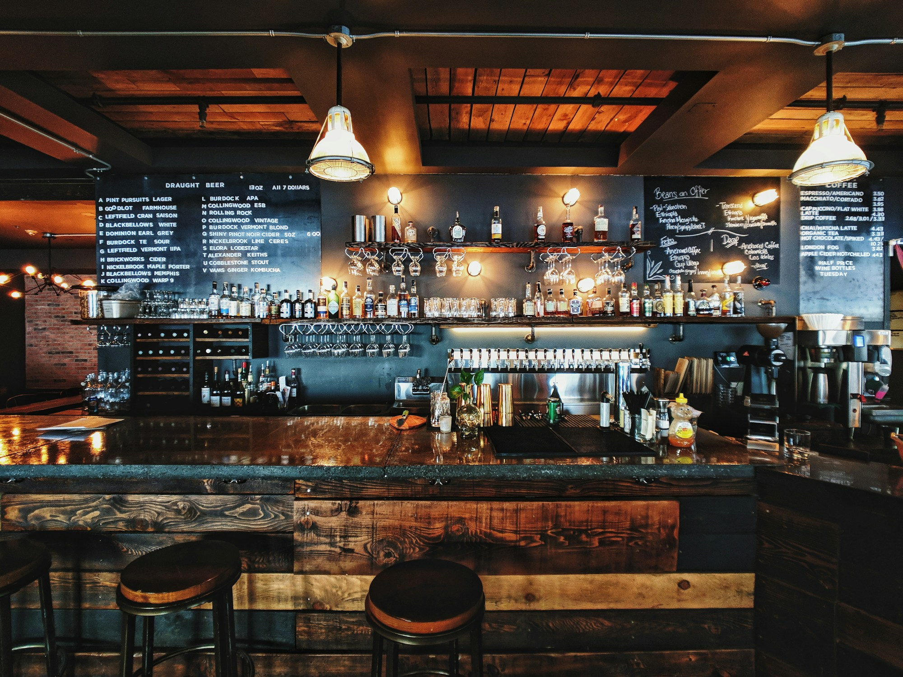

Records, front to back.
Albums deserve more than a shuffle. Settle into the full story.
A LISTENING BAR FOR THE LONG WAY HOME
SOUND ON. WORLD OFF.One more record.
Something good in your glass.
A little less hurry.

A place for the music you didn’t know you needed, and the conversation that goes somewhere.
After Hours is a listening bar concept built around a simple ritual: choose a drink, find your seat, and let a whole record play. No rushing to the next thing.
An independent design concept. This is a fictional venue, not a real business.
Albums deserve more than a shuffle. Settle into the full story.
Bright, bitter, spirit-free. A short menu with a little range.
Bring your favorite person. Or just your curiosity.
TONIGHT, IN THREE MOVEMENTS
Warm jazz. Soft edges. The first sip.
Soul, broken beats, a little head-nodding.
Deep cuts for the people still listening.
An imagined music direction. No audio plays on this website.
Put together your kind of night.
We’ll make you a little evening card.
GOOD COMPANY OPTIONAL.
GOOD LISTENING ENCOURAGED.